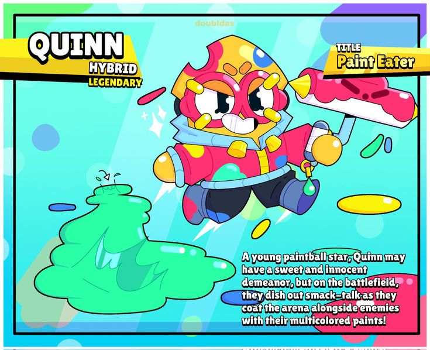
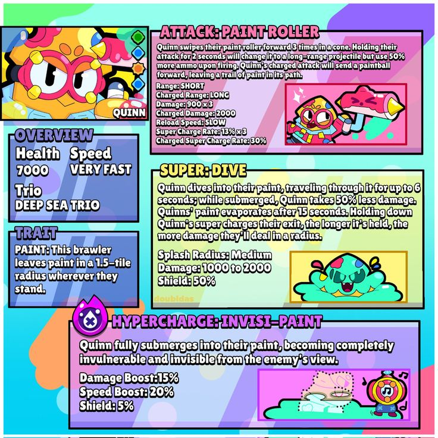
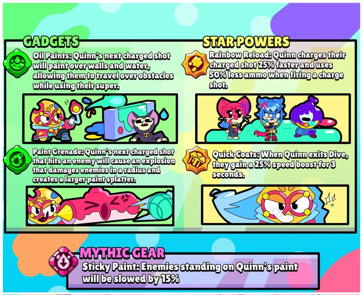

MikhailoKozak
Я - гравець бравл старс, та на момент тоді я мастер Бравла.
Персонаж якого я створив
Quinn
Про нього
#(на англ)A young paintball star, Quinn may have a sweet and innocent demeanor, but on the battlefield, they dish out smack-talk as they coat the arena alongside enemies with their multicolored paints!
#(на укр)Молода зірка пейнтболу, Квінн може мати милу та невинну вдачу, але на полі бою вони висловлюють образливі зауваження, покриваючи арену разом із ворогами своїми різнокольоровими фарбами!
його здібності
#(на англ)Attack: PAINT ROLLER: Quinn swipes their paint roller forward three times in a cone. Holding the attack charges a long-range projectile (a paintball) that leaves a trail of paint.
Super: DIVE: The character dives into their paint for up to 6 seconds, reducing incoming damage by 50%. Holding the super button increases the damage upon exit in a radius.
Trait: PAINT: Leaves paint in a 1.5-tile radius wherever they stand. Enemies standing on the paint receive periodic damage.
Hypercharge: INVISI-PAINT: Quinn becomes completely invulnerable and invisible during the super's duration.
#(на укр)Атака: МАЛЯРНИЙ ВАЛИК (PAINT ROLLER)Куїнн тричі змахує валиком перед собою, завдаючи шкоди в конусоподібній зоні. Якщо утримувати кнопку атаки, заряджається дальній снаряд — пейнтбольна куля, яка залишає за собою слід фарби.
Суперсила: ПІРНАННЯ (DIVE)Персонаж пірнає у свою фарбу терміном до 6 секунд, що зменшує отриману шкоду на 50%. Утримування кнопки Суперсили збільшує радіус та силу шкоди під час виходу на поверхню.
Особливість: ФАРБА (PAINT)Quinn залишає фарбу в радіусі 1.5 клітинки всюди, де проходить. Вороги, що стоять на фарбі, отримують періодичну шкоду.
Гіперзаряд: НЕВИДИМА ФАРБА (INVISI-PAINT)Під час дії Суперсили Quinn стає повністю невразливим та невидимим.
#(на англ)
GADGETS
Oil Paints: Quinn’s next charged shot will paint over walls and water, allowing them to travel over obstacles while using their super.
Paint Grenade: Quinn’s next charged shot that hits an enemy will cause an explosion that damages enemies in a radius and creates a larger paint splatter.
STAR POWERS
Rainbow Reload: Quinn charges their charged shot 25% faster and uses 50% less ammo when firing a charged shot.
Quick Coats: When Quinn exits Dive, they gain a 25% speed boost for 3 seconds.
Mythic Gear
Sticky Paint: Enemies standing on Quinn’s paint will be slowed by 15%.
#(на укр)
GADGETS
Олійні фарби: Наступний заряджений постріл Quinn зафарбує стіни та воду, що дозволить їй пересуватися крізь перешкоди під час використання суперсили.
Фарбова граната: Наступний заряджений постріл Quinn, який влучить у ворога, спричинить вибух, що завдасть шкоди противникам у радіусі дії та залишить більшу пляму фарби.
STAR POWERS
Веселкове перезаряджання: Quinn готує заряджений постріл на 25% швидше і витрачає на 50% менше боєприпасів під час пострілу.
Швидкі шари: Коли Quinn виходить із режиму «Занурення», вона отримує 25% прискорення на 3 секунди.
Mythic Gear
Липка фарба: Вороги, що стоять на фарбі Quinn, сповільнюються на 15%.